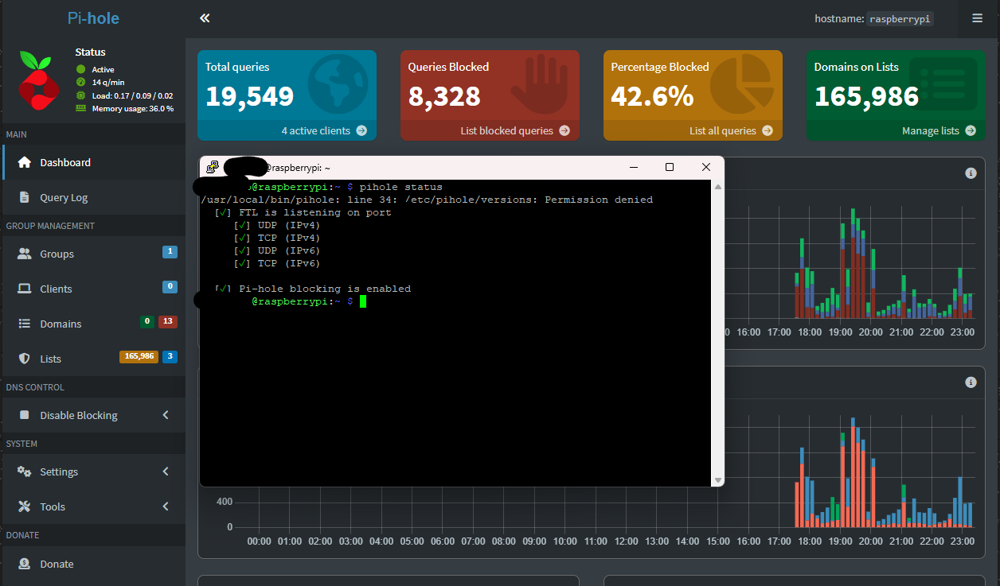

Cybersecurity Projects
-
Pi Hole: Implemented a network-wide ad-blocking solution using Pi-hole on a Raspberry Pi, integrated with WireGuard VPN via PiVPN. This setup ensures ad-free browsing across all devices on the local network and provides secure, encrypted access to the home network from remote locations.
View Pi-hole Setup
 - Phishing Analysis: Conducted email header investigations to detect spoofing.
- Pwnagotchi Build – Wi-Fi Hacking AI Companion: Built a fully portable Pwnagotchi device for wireless network auditing and WPA handshake capture. Configured and calibrated the system using PiSugar3 for power management and RTC synchronization. Integrated a Waveshare e-ink display and customized config.toml for automated operation. Connected via USB Ethernet gadget mode and enabled SSH control from host PC.